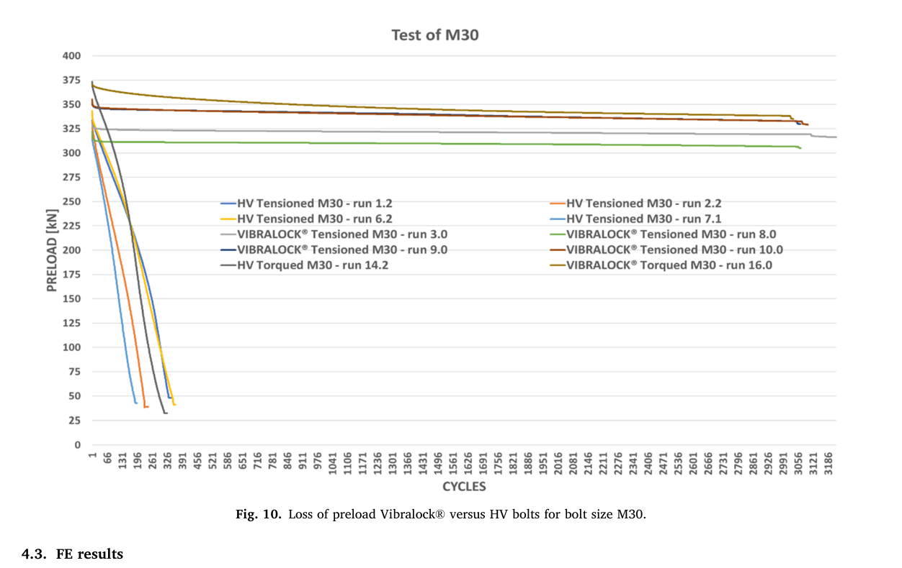
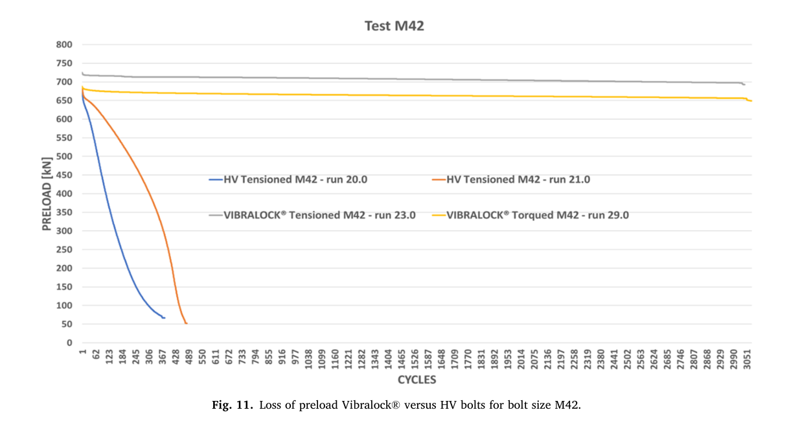

Karlsen 2022 — estudo de caso— case study
M30/M42 grandes, HV x Vibralocklarge M30/M42, HV x Vibralock
Figura do artigoPaper figure


Figura(s) originais do artigo (recorte do PDF) — a fonte dos pontos que foram digitalizados.Original figure(s) from the paper (PDF crop) — the source of the digitized points.
Condições do ensaioTest conditions
| ReferênciaReference | Karlsen & Lemu (2022). Eng. Fail. Anal. 106590 · doi:10.1016/j.engfailanal.2022.106590 |
| ParafusoBolt | M30x3.5, M42x4.5 |
| Pré-carga F0Preload F0 | 312–720 kN |
| AmplitudeAmplitude | ±1.00–1.50 mm |
| FrequênciaFrequency | 1 Hz |
| Família / nº de curvasFamily / curves | transverse · 11 |
| MAE medianomedian | 0.031 |
⚠ dispositivo de travamento — out-of-model declarado
Informações do artigo — aparato, corpo-de-prova, matriz de ensaiosPaper information — apparatus, specimen, test matrix
Karlsen & Lemu 2022 (Eng. Fail. Anal.) — M30/M42, HV vs Vibralock
Citation: Karlsen & Lemu, "Comparative study on loosening of anti-loosening bolt and standard bolt system", *Engineering Failure Analysis* (2022). DOI: 10.1016/j.engfailanal.2022.106590 (open access CC-BY; also UiS Brage / CORE) PDF: pdfs_open_access/karlsen2022_M30M42.pdf (= BAS_V2_papers/A.../Comparative study on loosening of anti-loosening bolt and standard bolt system.pdf)
Apparatus
- Large-scale Junker-type transverse vibration rig for very large bolts, 1 Hz,
transverse displacement ±1.0 mm (M30) / ±1.5 mm (M42).
- Preload measured continuously (load cell washer stack); preload applied either by
hydraulic tensioning ("Tensioned" runs) or by torquing ("Torqued" runs).
- Comparison: standard HV nut system vs Vibralock(R) anti-loosening system.
- Run-out ~3,000–3,100 cycles for surviving (Vibralock) runs.
Specimen
- M30 grade 10.9 (target F0 = 353 kN ≈ 70% yield; achieved initial 312–373 kN) and
M42 grade 10.9 (target F0 = 706 kN; achieved 660–720 kN).
- Paper attributes HV rapid loss to "immediate reduction of asperities ... not creep" —
contact-surface degradation, i.e. physical support for a damage variable D that degrades friction without requiring gross rotation first.
Trial matrix (digitized runs)
| CSV | Size | System | Preload method | F0 start (kN) | Life |
|---|---|---|---|---|---|
| karlsen2022_M30_HV_run1p2.csv | M30 | HV | tensioned | 315 | ~340 cyc |
| karlsen2022_M30_HV_run2p2.csv | M30 | HV | tensioned | 312 | ~230 cyc |
| karlsen2022_M30_HV_run6p2.csv | M30 | HV | tensioned | 340 | ~350 cyc |
| karlsen2022_M30_HV_run7p1.csv | M30 | HV | tensioned | 312 | ~195 cyc |
| karlsen2022_M30_HVtorqued_run14p2.csv | M30 | HV | torqued | 370 | ~310 cyc |
| karlsen2022_M30_vibralock_run9p0.csv | M30 | Vibralock | tensioned | 351 | >3,080 (−6%) |
| karlsen2022_M30_vibralock_torqued_run16p0.csv | M30 | Vibralock | torqued | 373 | >3,060 (−10%) |
| karlsen2022_M42_HV_run20p0.csv | M42 | HV | tensioned | 660 | ~375 cyc |
| karlsen2022_M42_HV_run21p0.csv | M42 | HV | tensioned | 685 | ~480 cyc |
| karlsen2022_M42_vibralock_run23p0.csv | M42 | Vibralock | tensioned | 720 | >3,050 (−3.5%) |
| karlsen2022_M42_vibralock_torqued_run29p0.csv | M42 | Vibralock | torqued | 685 | >3,060 (−5%) |
Not digitized: remaining Vibralock repeats (runs 3.0, 8.0, 10.0 M30) — nearly identical flat traces to run 9.0; available in Fig 10 of the PDF.
Digitization caveats
- Normalized by each run's own initial preload (first plotted value).
- HV collapse curves have no plateau — near-linear catastrophic back-off from cycle ~30;
reading error ±5 kN (±0.015 F/F0).
- X-axis is categorical-styled (Excel) but linear in cycles; tick labels every 65 cycles.
V2 calibration mapping
- Extreme size-effect validation: M30 at 353 kN and M42 at 706 kN vs library M6–M16 —
tests Phi_tr_correction and geometry scaling of the two-factor model (thread helix angle, contact radii) far outside the calibration range.
- HV branch: pure catastrophic rotational back-off →
k_loose_scale_trupper regime +
surface_damage (asperity-flattening onset without creep).
- Vibralock branch: locking-device modeling (wedge-cam nut) — near-flat 3–10% loss over
3,000 cycles = embedding-only signal (k_emb_scale) with rotation suppressed; useful as the "locked" limit case for locking_device_type handling.
- Tensioned-vs-torqued pairs isolate the effect of installation twist on subsequent
loosening (torqued HV run lost preload fastest initially despite higher F0).
Modelo vs dadoModel vs data
Cada card = uma curva digitalizada deste estudo: a linha é a previsão do modelo (config adotada, do store canônico) e os pontos são o dado medido; o badge traz o MAE.Each card = one digitized curve from this study: the line is the model prediction (adopted config, from the canonical store) and the dots are the measured data; the badge shows the MAE.
ReprodutibilidadeReproducibility
Cada card tem ↓ CSV (modelo + dado da curva). Os CSVs digitalizados originais ficam em Models/CALIBRATION_AND_VALIDATION/curve_library/digitized_csv/; a curva do modelo vem do store canônico (config adotada por fonte). Para reproduzir localmente:Each card has ↓ CSV (curve model + data). The original digitized CSVs live in Models/CALIBRATION_AND_VALIDATION/curve_library/digitized_csv/; the model curve comes from the canonical store (adopted per-source config). To reproduce locally:
Ver também o guia de uso do programa e a metodologia.See also the program usage guide and the methodology.